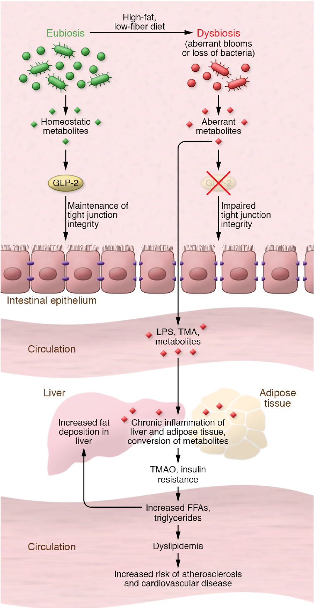

The gut microbiome and metabolic syndrome
Gut microbiome, metabolic syndrome, intestinal barrier, microbial metabolites

Abstract
The metabolic syndrome (MetS) is a constellation of risk factors that, if left untreated, will often progress to greater metabolic defects such as type 2 diabetes and nonalcoholic fatty liver disease. While these risk factors have been established for over 40 years, the definition of MetS warrants reconsideration in light of the substantial data that have emerged from studies of the gut microbiome. In this Review we present the existing recent literature that supports the gut microbiome’s potential influence on the various risk factors of MetS. The interplay of the intestinal microbiota with host metabolism has been shown to be mediated by a myriad of factors, including a defective gut barrier, bile acid metabolism, antibiotic use, and the pleiotropic effects of microbially produced metabolites. These data show that events that start in the gut, often in response to external cues such as diet and circadian disruption, have far-reaching effects beyond the gut.